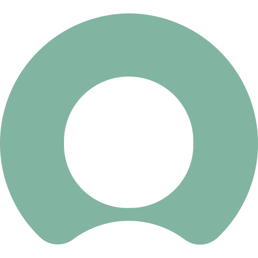
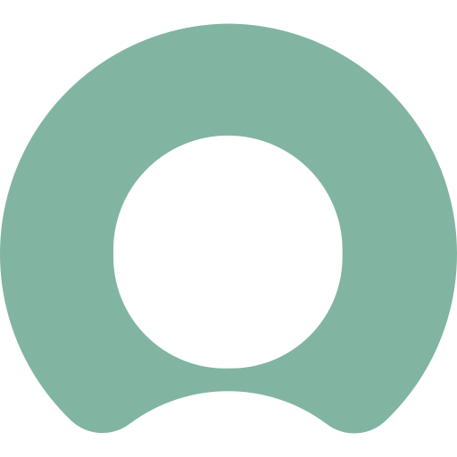

I'm a creative and inquisitive software engineer who is keen to show off my developing skills.
I enjoy making things and experiencing that feel-good factor from successfully publishing a project, knowing I made and was part of that.
I specialise as a Full-Stack Developer primarily with C#, Java & Scala, but I am also interested in Data Mining and Functional Software Development.
I am currently employed as a Software Developer for Six Degrees. They are based in St. Katharine Docks, London.

I have a versatile skill set; here are some of the tools I use:


 



Check out my work on the other tabs!
2017 to 2020 | BSc Software Engineering (Hons) | De Montfort University, Leicester
Achieved a First with an 85% module average. Some of my favourite modules I worked on include:


Hosted on GitHub Pages


2014 to 2017 | Sixth Form | Bullers Wood School, Chislehurst
A Levels: Business (B), Mathematics (C), and Computer Science (C).
-> Learned the basics programming through Python.
-> Created simple games such as FizzBuzz, Blackjack, Master Mind, Rock Paper Scissors & a two player guessing game.
-> Created maths related scripts such as calculating leap years, Fibonacci sequence or the collatz conjecture.
-> Created and documented a KS2 Maths System that asks students questions within the syllabus (Visual Studios & C++).
AS Levels: Financial Studies (B), and History (D).
Here are some projects I've completed:

Free on Google Play

Hosted on GitHub Pages

Running üèÉ
I enjoy staying active by doing 5km
Parkruns
every Saturday.
I am currently training for two runs: the
High Elms 10km
on the 5th of June 2022; and the
Richmond Marathon
on the 11th of September 2022.
Therefore, I am running at least three times a week in preperation for these events.
The goal of Richmond Marathon is to raise money for MindUK.
PC Building üñ•Ô∏è
I enjoy learning about computers and their components.
I built my first
custom PC
in 2015, which I still use to this day.
However the system is showing its age, so I'm currently putting together a
newer setup.
This is primarily for work, simulations and light gaming.
Pok√©mon GO Discord üì±
My friends and I run the
Pokémon GO Tower Bridge UK
Discord.
With over 200 members, we keep followers updated on in-game events as well as organise meet-ups.
With the relaxed restrictions from the pandemic, we are trying to return to the pre-pandemic numbers and slowly getting the community as active as before.
Chess ♟️
I've been playing chess casually since January 2021.
Challenge me on chess.com,
my best blitz rating is and I would enjoy challenging people regardless of rating.
Football ⚽
I'm an Ipswich Town fan, and I've been playing
fantasy football,
since the 2015/16 season.